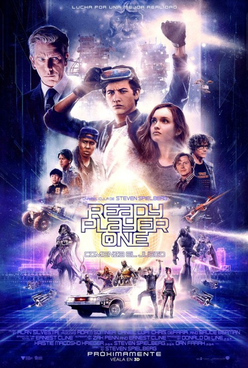

<div class="container">

  <div class="row">

    <div class="col-md-11 mx-auto movie-card_block">


      <div class="row">

        <div class="movie-card_header col-md-6 justify-content-center">

          
          <button type="button" class="btn btn-secondary"> <i class="fas fa-play-circle"></i> OBEJRZYJ ZWIASTUN</button>
        </div>

        <div class="movie-card_info col-md-6">
          <h2>Ready Player One</h2>
          <h3>Animacja | Akcja | Science Fiction</h3>


          <table class="table table-borderless table-dark">
            <tbody>
              <tr>
                <th scope="row">Gatunek:</th>
                <td><span class="badge badge-pill badge-secondary">Sci-Fi</span></td>

              </tr>
              <tr>
                <th scope="row">Reżyseria:</th>
                <td>Steven Spielberg</td>

              </tr>

              <tr>
                <th scope="row">Scenariusz:</th>
                <td>Ernest Cline, Zak Penn</td>

              </tr>

              <tr>
                <th scope="row">Produkcja:</th>
                <td colspan="2">USA</td>

              </tr>
              <tr>
                <th scope="row">Czas filmu:</th>
                <td colspan="2">2 godz. 20 min.</td>

              </tr>
              <tr>
                <th scope="row">Premiera:</th>
                <td colspan="2"> 11 marca 2018 </td>

              </tr>

              <tr>
                <th scope="row">Język: </th>
                <td colspan="2">Polski</td>

              </tr>


            </tbody>
          </table>

        </div>
        <button type="button" class="btn btn-secondary"> <i class="fas fa-tags"></i> KUP DOSTĘP</button>

      </div>


    </div>


    <div class="col-md-10 mx-auto movie_description_block">

      <div class="movie_description_info">
        <h2>Opis filmu</h2>

        <p>
          Rzeczywistość 2045 roku nie nastraja optymistycznie. Świat znajduje się na skraju upadku i pogrążenia w
          chaosie. Wade Watts (Tye Sheridan) czuje, że żyje, tylko gdy ucieka do OASIS — wirtualnego uniwersum, w
          którym większość ludzi spędza całe dnie. W OASIS można podróżować, przeżywać przygody i być kimkolwiek się
          zapragnie. Jedynym ograniczeniem jest własna wyobraźnia. Ekscentryczny geniusz James Halliday (Mark Rylance),
          który stworzył OASIS, szuka godnego następcy. Organizuje trzyetapowy konkurs, w którym nagrodą jest olbrzymia
          fortuna i całkowita kontrola nad uniwersum. Wade i jego przyjaciele z "Wielkiej Piątki" podejmują wyzwanie
          polegające na szukaniu skarbów w zakrzywionej rzeczywistości. W fantastycznym świecie — pełnym niespodzianek,
          ale i niebezpieczeństw — czeka ich zadanie ważniejsze niż sam konkurs. Muszą ocalić OASIS.
        </p>

      </div>
      <hr />

      <div class="movie_description_article">

        <h2>Dodaj recenzję</h2>


        <form>
          <div class="form-row">
            <div class="col">
              <div class="movie-input">
                <i class="fas fa-user"></i><input type="text" class="form-control" placeholder="Imię">
              </div>
            </div>
            <div class="col">
              <div class="movie-input">
                <i class="fas fa-envelope"></i><input type="text" class="form-control" placeholder="E-mail">
              </div>
            </div>
          </div>

          <div class="form-row">
            <div class="col">
              <div class="article-input">
                <i class="fas fa-paper-plane"></i>
                <textarea type="text" class="form-control text-field" placeholder="Recenzja"></textarea>
              </div>

            </div>
          </div>
          <button type="submit" class="btn btn-secondary"><i class="fas fa-check"></i> WYŚLIJ RECENZJĘ</button>
        </form>
      </div>
    </div>


  </div>


</div>
